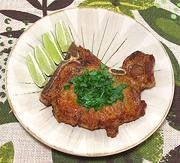

|
Pork Chops, Minas-styleBrazil - Costeleta de Porco à Mineira | ||||
| Makes: Effort: Sched: DoAhead: |
4 ea ** 1-3/4 hrs No |
A dish from Minas Gerais state, where recipes are usually simple and meaty. The amounts given will marinate about 4 pork chops. See also Comments | |||
|
4 ----- 2 2 2 1/3 1/4 ----- ----- |
--- T cl t t t --- --- |
Pork Chops (1) -- Marinade Lime Juice Garlic Olive Oil Salt Pepper -- Garnish Cheiro Verde (2) Lime Wedges -- Serve With Collard Greens (3) Rice, Steamed |
Prep - (1-1/4 hr - 10 min work)
|
amm_pigchp1 170923 fcb77 -
www.clovegarden.com
©Andrew Grygus - agryg@aaxnet.com - Linking to and
non-commercial use of this page is permitted.